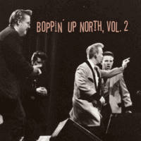

VA - Boppin' Up North, Vol. 2 (Compilation, 2018)
Backyard Drifters:
01 - Bonneville (2:06)
02 - Hot Rod Baby (2:04)
03 - Thank's a Lot (3:03)
Farmer Fred and the Electrified Donkey:
04 - Let's Go! (2:39)
05 - Sugar Sweet (2:45)
06 - Born to Love One Woman (3:15)
the Rocket Squad:
07 - Boogie Woogie Bop (1:51)
08 - Sweet Baby (3:05)
09 - Backseat Bingo (2:10)
the Swingville Bros:
10 - Dig Boy, Dig (1:55)
11 - Hillbilly Fever (2:29)
12 - Shake It up and Move (1:46)
the Ton up Gang:
13 - Baby Take Me Back (2:01)
14 - Barking up the Wrong Tree (2:19)
15 - Crazy, Crazy Lovin' (2:24)
Hank Sundown and the Roaring Cascades:
16 - The Old Ted Rock & Roll (2:00)
17 - Scandinavian Ted (2:57)
the Tempo Toppers:
18 - Lobo Jones (2:10)
© Arild Rønes / Rockaround Records :: [193428262713]
Notes
Review
187/366 (Project 366)
What a great opprotunity to explore certain theme by a compilation! Here is one! Elegant Rockabilly Rock'n'Roll compilation from Norway.